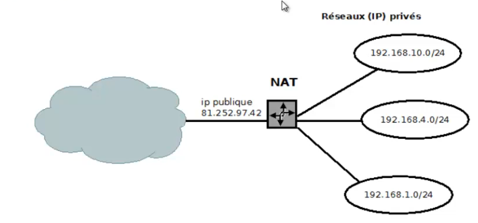

Service IP : NAT
Plan
• Introduction
• Types de NATing
• Réseau privé / publique
• NAT statique
• NAT Dynamique
• NAT dynamique PAT
• NAT dynamique PAT pour adresse publique unique
• Commandes d'information
Introduction
• Traduction d'adresse IP (Network Address Translation)
◇ faire correspondre une adresse pubique unique pour un réseau privé
◇ le nombre d'adresses publiques étant limité
▪ ex : démarche de demande de bloc d'IP au RIPE NCC via OVH
• RFC 1631 - Mai 1994

Types de NATing
• statique
◇ faire correspondre une adresse publique à une adresse privée
• dynamique
◇ créé dynamiquement las translations dans un pool d'adresses publiques
• PAT
◇ translation basée sur les ports TCP/UDP
Réseau privé / publique
• Première étape de tout type de nating
◇ le NAT ne prenant effat que quand un paquet est routé de “l'intérieur” ves "l'extérieuré, ou inversement
◇ il est con nécessaire de définir cet “intérieur” et cet "extérieur
• Par interface
(config-if)# ip nat {inside|outside}
NAT statique
• Faire correspondre une adresse publique à une adresse privée
(config)# ip nat inside source static 192.168.1.10 201.55.4.8
NAT Dynamique
• Les adresses publiques sont automatiquement choisies dans un pool d'adresse
• création du pool d'adrsses
(config)# ip nat POOL-NAT-LAN1 201.55.4.1 201.49.10.10 netmask 255.255.255.240
• création de l'ACL
(config)# access-list 1 eny 192.168.1.10
(config)# access-list 1 permit 192.168.1.0 0.0.0.255
• activation du NAT
(config)# ip nat inside source list 1 pool POOL-NAL-LAN1
NAT dynamique PAT
• nécessaire si le nombre d'adresses publique est plus faible que celu d'adresses privées
◇ tanslation de port source, afin d'identifier le client
• ajouter simplement "overload" à la configuration précédente
(config)# ip nat inside souce list 1 pool POOL-NAT-LAN1 overload
NAT dynamique PAT pour adresse publilque unique
• Configuration la plus courante sur les réseaux de petite dimension
◇ une seule adresse IP fixe sur Internet par exemple
• Définir un pool d'adresse n'est donc plus adapté
◇ il suffira alors de de baser sur l'adresses de l'interface “outside”
(config)#ip nat inside source list 1 interface serial 0/0 overload
Commande d'information
• Afficher la table de translations
◇ translations effectuées en accord avec les règles établies
#show ip nat translations
• Vérifier l'adresse desd paquets reçu sur un routeur
# debug ip paquet
Ce qu'on a couvert
• Confiugration du NAT sur les routeurs Cisco
◇ concept
◇ fonctionnement
◇ types de NAT
◇ mise en palce
▪ NAT statique
▪ NAT dynamique
- PAT